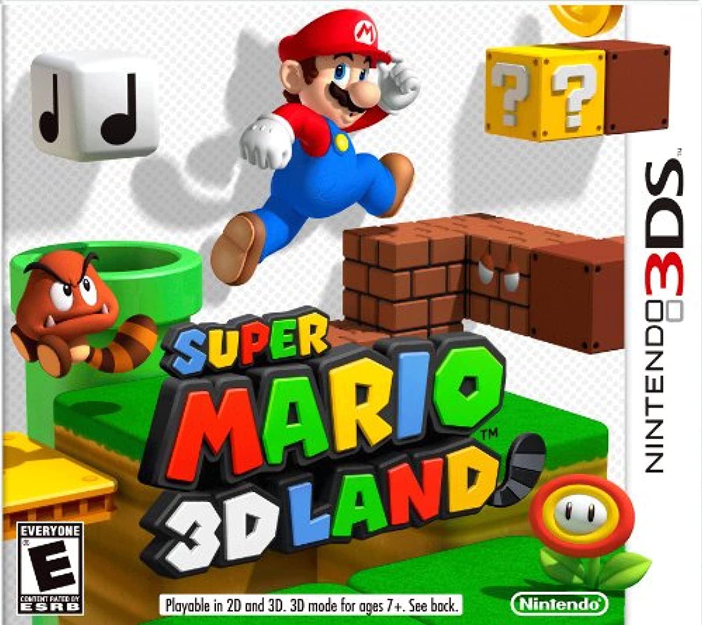
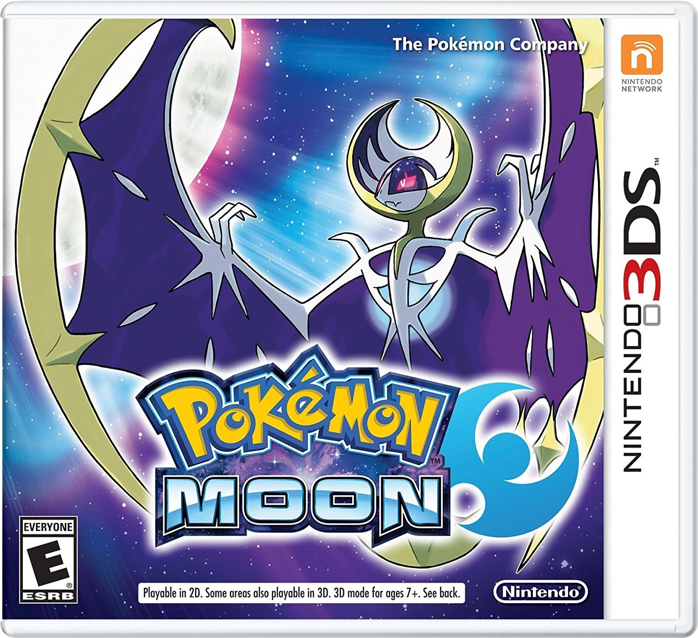
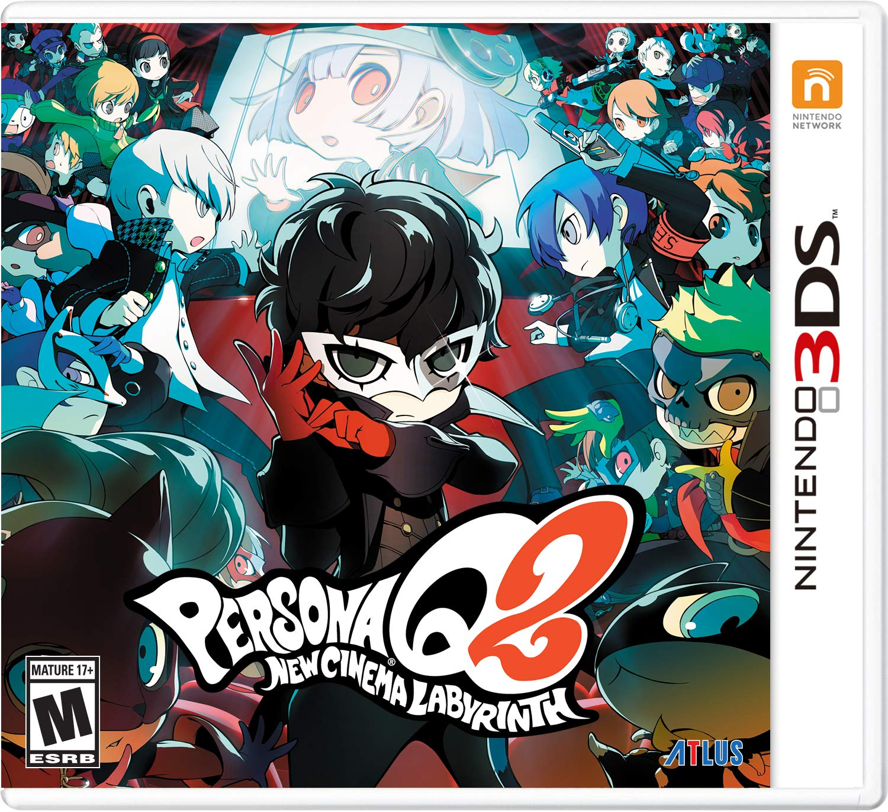
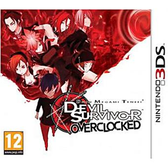

Time and date
Time and date

Super Mario 3D Land is the second 3D Super Mario platformer for a handheld device, and the successor to Super Mario Galaxy 2. The game is closely based on side-scrolling Mario games, as it combine elements from both traditional 2D Mario games and modern free-roaming 3D Mario games. It also introduces elements into the series, including power-ups and gameplay mechanics.

Embark on a new adventure as a Pokémon Trainer and catch, battle, and trade all-new Pokémon on the tropical islands of the Alola Region. Discover the Z-Moves and unleash these intense attacks in battle. Call upon Pokémon with Poké Ride to discover new areas across the region and take on the Island Challenge Trials to become the Pokémon Champion!

The dream meeting of Persona 3, 4, 5! Welcome to the movie world (Labyrinth).The latest RPG in the Persona series! A new storyline in Persona Q, this time focusing on P5. The most number of party members in the Persona series with a total of 28 people! A dream RPG where P3, P4, and P5 characters meet to unravel the mystery begins!

Devil Survivor Overclocked is an enhanced port of Devil Survivor made exclusively for the Nintendo 3DS. The port features enhanced art, voice acting for almost every piece of dialogue, new demons and an extended story (8th Day).

The Legend of Zelda: Ocarina of Time 3D is a remake of Ocarina of Time with more up-to-date graphics, streamlined UI and different additional game modes. Most textures are significantly more detailed, and many models are more faithful to the game's concept and promotional art. In addition, the frame rate has been increased to 30 FPS compared to the original's 20 FPS.